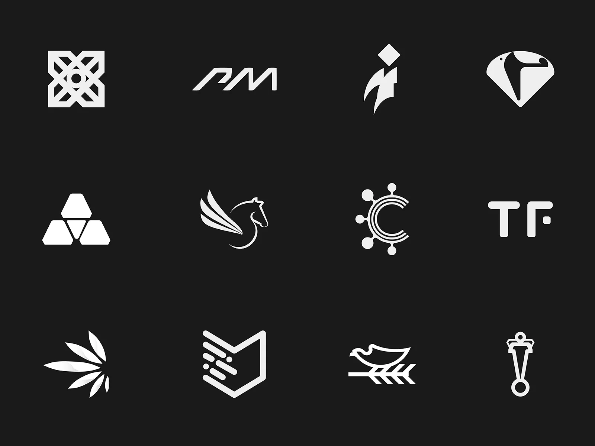
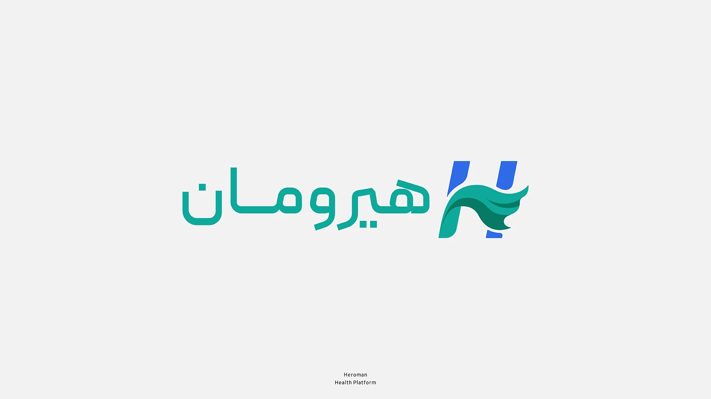
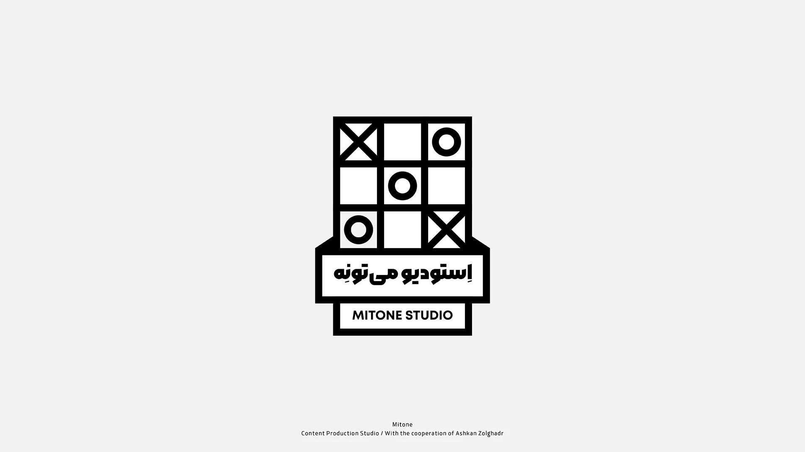
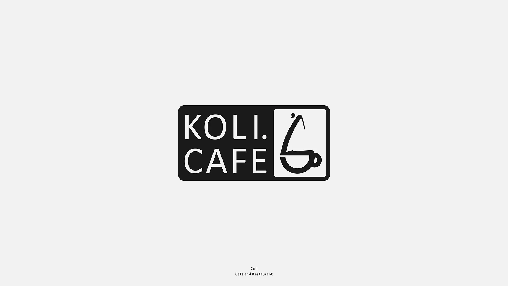
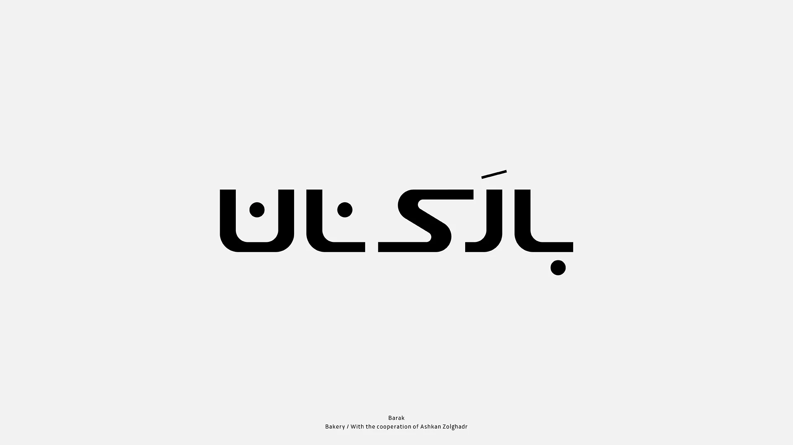
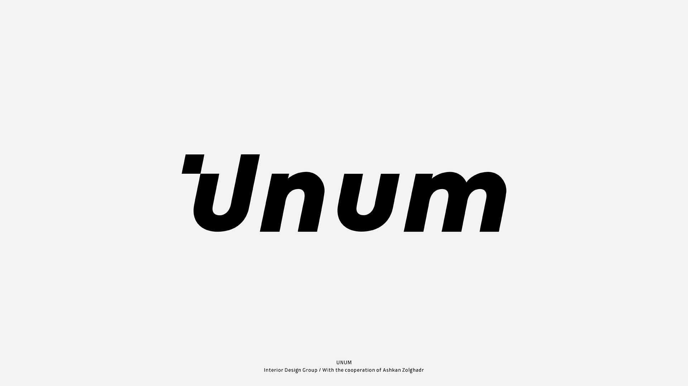
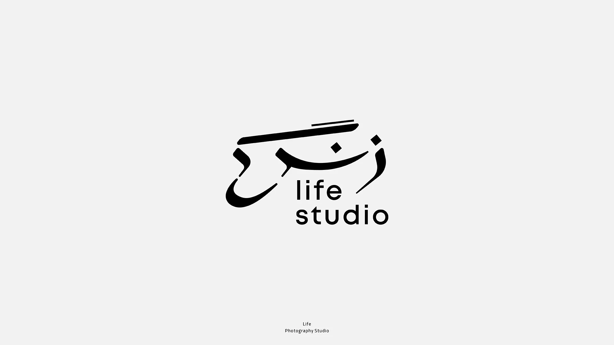
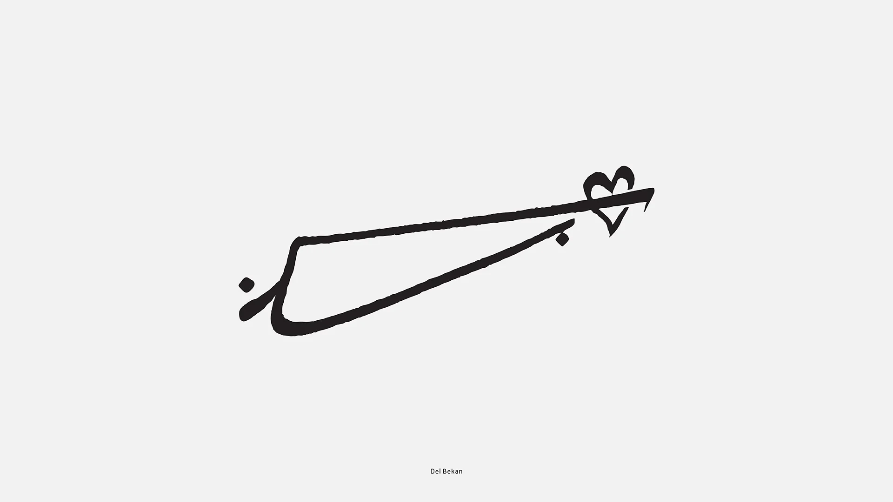
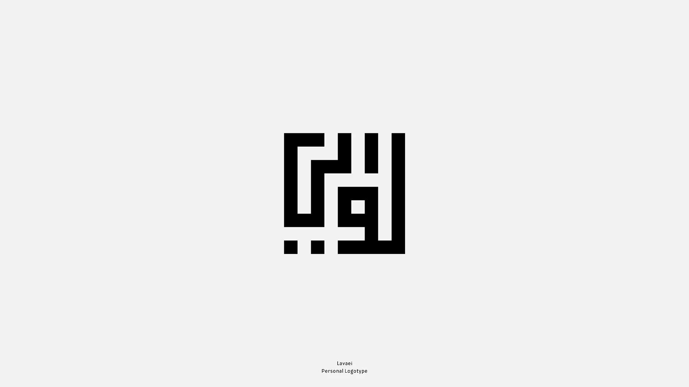

گلچینی از
طراحیهای لوگو
این بخش گلچینی از هشت پروژه لوگوست که در سالهای مختلف طراحی کردهام، از برندهای صنعتی تا کسبوکارهای کوچک. هر لوگو با شناخت دقیق برند و مخاطبش طراحی شده، نه از روی یک قالب آماده.







